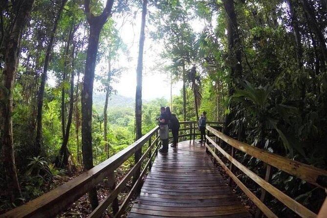
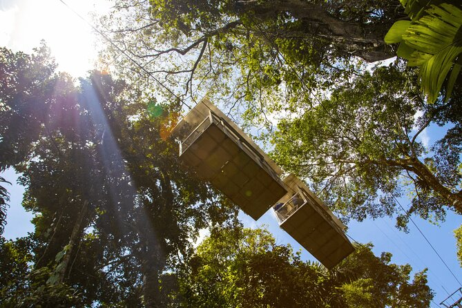
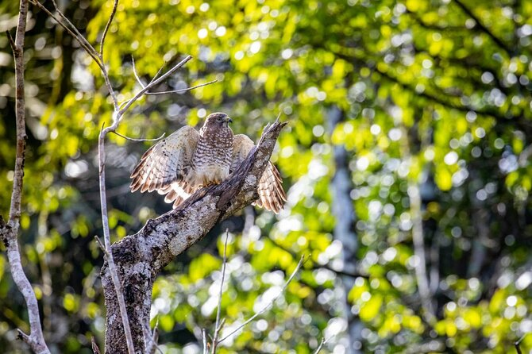
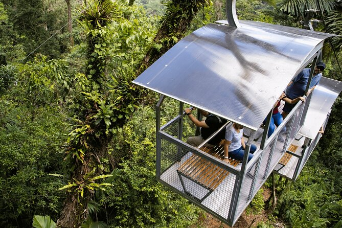
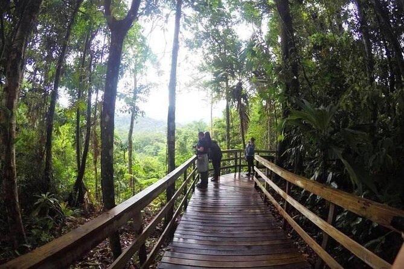
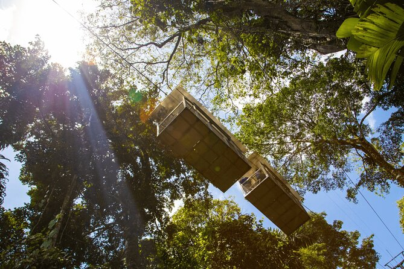
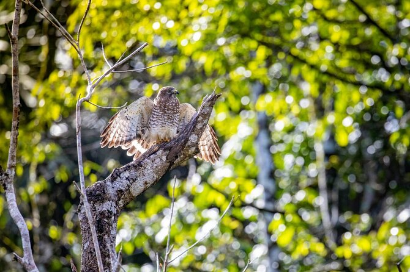
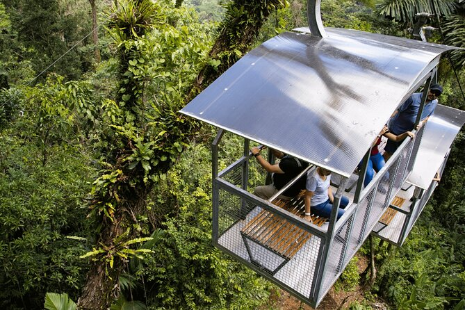

Paseo por la selva tropical de Veragua, tranvía y paseo en barco por Tortuguero. Excursión a la costa de Limón (3 personas)
 







Después de la recogida en el muelle, un breve trayecto en coche te llevará a lo más profundo de la selva tropical de Costa Rica. En el camino, nuestro guía turístico profesional explicará muchos datos sobre nuestro país, incluida la historia, la economía, la biodiversidad, la política y muchos otros aspectos más. Una vez que llegue a la selva tropical de Veragua, prepárese para explorar un ecosistema prístino.Pasearás por senderos de fácil acceso hasta el tranvía. Luego ingresará a un sistema de góndolas al aire libre que lo llevará a través de la selva tropical primaria, pasando por árboles de 300 años de antigüedad, hasta la orilla del río. Luego caminará por el Sendero de los Gigantes, llamado así por los enormes árboles que bordean la orilla del río, u optará por caminar por el sendero de la Cascada Puma.Tome el tranvía hasta la estación superior y visite la estación de investigación biológica. Después de Veragua, visite el Canal de Tortuguero. Los canales que conducen al Parque Nacional Tortuguero nacen en el sector de Puerto Moín, a sólo 5 kilómetros del centro de la provincia de Limón. Aquí disfrute de muchas especies de vida silvestre como los perezosos.
Cantidad de reservas disponibles: 4 resevas disponibles
Precio: US$ 525,00
Ubicacion: Limon, Costa Rica
Comentarios
Usuario Anónimo: Excelente servicio!